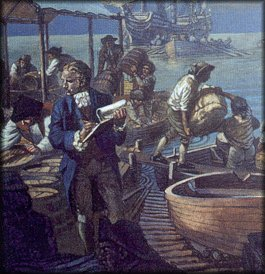
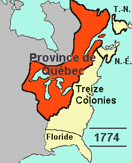
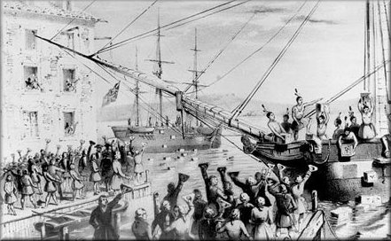
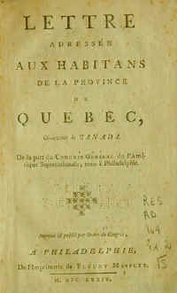
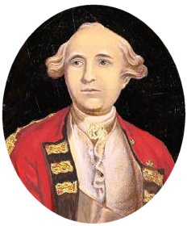
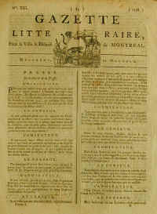
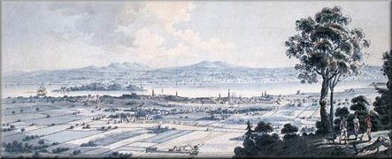

|
THE BRITISH
RÉGIME
Since the
Conquest of 1759, Canada has had several constitutions.
Jean-Baptiste
Chauret, our ancestor of the fifth generation, lived under three of them.
In other words, he lived through a period
of political adjustment... THE
ROYAL PROCLAMATION
THE QUEBEC ACT
THE AMERICAN REVOLUTION AND THE PROVINCE OF
QUEBEC
PETITIONS AND DELEGATIONS RESUME
THE MANY ADVANTAGES OF THE BRITISH RÉGIME 
The
Royal Proclamation
On August 10, 1764, on the Place
d'Armes in Quebec, before the troops under arms and a large
crowd, the Royal Proclamation is read. It is the first
English constitution given to the colony, which is
now called "Province of Quebec". So begins the British
régime...
 The
name Canada disappears from the maps, and the administrative structure is
simplified by merging the three governments of Quebec, Trois-Rivières
and Montréal into a single one, based in Quebec. James Murray is the
Governor; he must apply the 88 articles of the Proclamation covering
every area of government activity. The
name Canada disappears from the maps, and the administrative structure is
simplified by merging the three governments of Quebec, Trois-Rivières
and Montréal into a single one, based in Quebec. James Murray is the
Governor; he must apply the 88 articles of the Proclamation covering
every area of government activity.
The
territory, however, is smaller; it is limited to the area settled
by the Canadiens in the St. Lawrence valley. The
Great Lakes and Lake Champlain are left out. Labrador and the North Shore
are attached to Newfoundland. Everything outside
the colonies is in the hands of the Amerindians, whom the British try to
reassure by leaving them vast territories, in the hope that they
will not take up arms against the British again.
Murray forms a council of 12 people, chosen from among
the 250 inhabitants of British origin then living in the colony. To hold an important post in the public
administration one must take the Test Oath, so Catholics
are excluded from the outset. Murray, and later Carleton, nonetheless
give some posts to Canadiens without swearing them in. It is worth
noting that, to be an official even under the French régime, one
had to swear loyalty to the Crown and to the Catholic
religion. In an English colony, one must show one's
Anglicanism and Protestantism: that is the Test Oath.
In the courts, the court martial is replaced
by a civil court meant to administer the Common Law. But in
practice the Coutume de Paris (the Custom of Paris, the old French civil law) lives on, to keep
justice simple.
 French Canadians and the British have to learn to live together.
For the British, it is only a matter of time before the
French Canadians are assimilated.
It is a period of friction and adjustment between the Canadiens, the authorities and the British
merchants.
The merchants, though few in number, run a smear campaign
against Governor Murray, whom they find too lenient with the defeated. These
merchants send a new petition to the King accusing
Murray of "treating them harshly... being partial to the
Canadiens... not attending divine service..." In a
word, of being a French Party.
 The British merchants' accusations
lead to the recall of Governor
Murray to London. He clears himself but is replaced by Sir Guy
Carleton in 1768. The British merchants' accusations
lead to the recall of Governor
Murray to London. He clears himself but is replaced by Sir Guy
Carleton in 1768.
Carleton quickly understands that giving in to the
merchants' demands would not only make the existing chaos worse,
but would also stir up greater hostility among the French Canadians.
Another point of disagreement between Carleton and the merchants
is their demand
for an elected House of Assembly. They hope in this way to control the passing of
laws and taxes. They are influenced by the unrest shaking
the New England colonies and their slogan "No
taxation without representation". The British merchants of
the Province of Quebec embrace this principle, provided they are
the only citizens eligible for election to the assembly.
In their eyes, the Canadiens have been British subjects for too short a
time to enjoy the privilege of becoming members. They are still
too attached to the Pope and do not know British laws and customs
well enough.
But that would put the fate of the Canadiens in the hands
of a tiny English-speaking minority. The British leaders consider
various options, while rejecting the complete exclusion of Canadiens
from seats in the assembly. The merchants grow impatient; 31 of them,
including James McGill and John McCord, sign in December 1773 a
petition calling for the immediate creation of a house of
representatives. Given
the alarming turn of events in the New England
colonies, the British put off approving a
House of Assembly in the Province of Quebec, even though
Nova Scotia has had its own since 1752.
While the debate on these questions goes on, reports and opinions
are commissioned. French Canadian inhabitants and British
merchants also lobby behind the scenes to press
their own positions.
In the end, circumstances force the English government
to take a stand on the Canadian problems, not so much
out of kindness as to "help" the Canadiens stay
loyal to England.
Back to top
The Quebec
Act
"I
would think it essential not to give the Canadiens back their laws; they
will keep up their perpetual recourse to those laws and customs, which
will go on making them a distinct people", declares an
English member of Parliament opposed to the Quebec Act.
But the English government, "its eye fixed not on Quebec but
on Boston", drafts the Quebec Act to win over the
Canadiens. It needs them, and must bind them to itself.
On June 22, 1774, despite
strong opposition and a
demonstration by Londoners along the route of King George III as he
goes to Parliament, the Quebec Bill receives royal assent. The
King declares: "The very peculiar and
embarrassing circumstances in which the Province of Quebec was
involved had rendered the proper adjustment and regulation of the
government thereof a matter of no small difficulty. The bill which
you have prepared for that purpose, and to which I have now given my
assent, is founded on the clearest principles of justice and
humanity, and will, I doubt not, have the best effect
in quieting the minds and promoting the happiness of my
Canadian subjects."

This
new constitution covers four main points:
- The boundaries of Quebec's territory are
greatly enlarged
to satisfy the English merchants and to check the growing power
of the Anglo-American colonies.
- The administration of the colony is entrusted
to a governor with unlimited powers, who appoints a Legislative Council of
about twenty members, chosen by the governor. No House of Assembly
is granted, however
- The Quebec Act protects the Catholic
religion. The Test Oath, which kept Catholics
out of public office and the administration of the
province, is no longer required and is replaced by an oath more
acceptable to the Canadiens.
- It also protects French
law in civil matters. English law applies
only in criminal matters,
this last point being a great advantage for the population.
 The British merchants of Quebec suffer a setback with this
new act, which ignores their most important demands. They
nevertheless keep campaigning to abolish the French
civil code and to set up a house of assembly excluding
Catholics and French speakers.
And the French language? It
is not mentioned at all...
By guaranteeing the right to
"customs and usages", the Quebec Act in effect makes French almost
official. Besides, French is at the time the international language of
communication; the Court in London speaks it fluently, and the senior English
officials of the Province of Quebec are bilingual, as
are the upper classes of society. No one sees the
need to devote a special clause to language in the
treaties.
Had the English lost their
minds?
Why were the English so set
on the Quebec Act when their whole population was
against it? Purely for reasons of state. In fact, especially in the articles on religion
and civil law, historians note how much King George III's real
concern was to limit the reach of French civil
law and to restrict religious rights as far as possible.
What has been called the Great Charter of French Canadian
rights is in fact only a concession meant to be limited
in time and space.
Without the American Revolution, the British Parliament would have waited
a long time before granting rights to the new subjects of the
Province of Quebec. But thanks to that revolution, French Canadians won fundamental
rights that
allowed them to be a distinct people in America. Their struggle for
survival and recognition of their identity began then, and does not
seem close to ending. For many historians, the Quebec Act
laid its foundations; the British
Parliament could not later go back on many
of the rights granted to the
Canadiens.
Back to top
The
American Revolution and the Province of Quebec
With its hands full with its thirteen American
colonies, England is betting, through the Quebec Act, that the
Canadiens will stay loyal. And it is a winning bet...
The American Revolution 1774-1776
 On
December 16, 1773, comes the Boston Tea Party. The powder keg
in America is lit...
The thirteen English colonies are deeply unhappy with the
Royal Proclamation that
followed the Treaty of Paris. Having fought New France
for so long, they feel they have not
received enough from England. The lands they claim
have been handed over to the Native peoples, and on top of that England is taxing them
to pay for the conquest. In revolt, the colonists decide to proclaim the independence
of the United States of America. The American War of Independence begins. The Quebec
Act of 1774 angers the representatives of the
New England colonies, who demand that it be repealed outright.
During their revolution, the American Congress makes
direct contact with the Canadiens. The delegates of Congress write
two letters, Letter to the Inhabitants of the Province of Quebec and Letter
to the Inhabitants of Canada, inviting them to join the
revolution and to elect deputies to represent them at the
next general congress "of this continent, which is to open its
sessions in Philadelphia on May 10, 1775".
Both letters circulate among the people. During the winter of
1774-1775, English merchants travel through the countryside making
the case for the American cause. In Montréal,
secret meetings are held.
| Written in French to persuade the Canadiens to
join the Americans' independence project, this letter,
printed by Mesplet, stresses the Canadiens' legitimate
right to democratic government : « the
people have a share in their government through representatives
of their own choosing, and are therefore governed by
laws they approve, and not by the edicts of men over
whom they have no power ». The address mentions
other legitimate rights : trial by jury, habeas
corpus, property rights, freedom of the press, a House
of Assembly, the power of taxation, the separation of powers. The
text invites the Canadiens to unite « in so
just a cause », and ends by reminding them that « your
Province is the only link missing to complete the
strong and bright chain of their union ». |

Letter
addressed to the Inhabitants of the Province of Quebec, formerly
Canada, from the General Congress of North
America, held in Philadelphia, printed & published
by order of Congress, in Philadelphia, at the press of
Fleury Mesplet, 1774
|
On May 22, 1775, the Bishop of Quebec, Jean-Olivier Briand,
issues a pastoral letter urging the Canadiens to close their
ears to the call of the "rebels" and to defend their country and
their king against invasion. Although the English and the revolutionaries manage to
recruit a few hundred Canadiens for the militia, most of the
population chooses to stay neutral in the conflict.
The Americans Arnold and Montgomery
invade Quebec; since the written invitation went unanswered, they
try force. They take Montréal on May 10, 1775, then
Trois-Rivières, and lay siege to Quebec on the night of December 31. Montgomery
is killed and Guy Carleton saves the city.
While the official spokesmen of the French
Canadians show loyalty to the British Crown, the people seem
to show no enthusiasm for supporting the King of England's cause.
In
1775 the Philadelphia congress sends three delegates to
seek France's support. Among them is Benjamin Franklin, who
has unprecedented success. A Franco-American alliance
follows a few years later, thanks among others to the work of La
Fayette, and of French intellectuals such as Beaumarchais who believe
in the freedom of peoples in this 18th century, the century "of
the Enlightenment".
On June 1, 1776, English and Irish military
reinforcements, along with German mercenaries,
arrive in Quebec on thirty-six ships. They put
the Americans to flight, and they withdraw from Canada.
On July 4, the day of the American Declaration of Independence.
 In 1778,
Frederick Haldimand, a French-speaking Swiss, becomes governor, replacing Guy
Carleton.
On October 28, the French admiral Charles-Henri, comte d'Estaing, publishes a
manifesto calling on the "French of America" to
ally themselves with the United States in their struggle. He counts on the support of Canadiens
who want their country to become a French colony again. Distributed in secret and posted on the doors of
a few churches, the manifesto enrages the new governor.
But in reality France has no interest in its
former colony. It suits France better for England to keep
Canada. What France wants above all is access to the market of the
new United States.
That year Fleury Mesplet founds the Gazette littéraire de Montréal, Montréal's first
newspaper.
| We owe to Mesplet, printer to the American Congress, this
first French-only newspaper in Quebec, which from its founding
in the summer of 1778 set out to spread the ideas of the Enlightenment. With
the journalist Valentin Jautard, Mesplet made this
weekly a place of debate and protest, but also
a teaching tool for the students of the Collège de Montréal.
During its short year of existence, the Gazette de Montréal commented
among other things on the death of Voltaire and the founding of a « Voltairean
Academy » in Montréal. While discussing
science, education, literature and philosophy, Jautard
invited his readers to send him poems, which he reviewed and
corrected under the pen name « Spectateur tranquille » (the Quiet Observer).
With Pierre du Calvet, he attacked judges Rouville and
Southouse : in June 1779 the journalists were jailed,
which put an end to this intellectual adventure. |
 |
 Some
Canadiens,
such as Clément Gosselin, have been working for the American cause for years and
hope their fellow citizens will join their fight against
England. Gosselin is a spy for
Washington; he and 200 Canadien militiamen take part
in battles with LaFayette's army. The Franco-American alliance
raises false hopes among these people, who dream of France taking back
Canada. Some
Canadiens,
such as Clément Gosselin, have been working for the American cause for years and
hope their fellow citizens will join their fight against
England. Gosselin is a spy for
Washington; he and 200 Canadien militiamen take part
in battles with LaFayette's army. The Franco-American alliance
raises false hopes among these people, who dream of France taking back
Canada.
Half of the American
army at the Battle of Yorktown was French! Gosselin
paid dearly for his commitment to the American cause: he was excommunicated and was
wounded while commanding an artillery unit in the final battle of the
American revolt. A grateful Congress gave him 1,000
acres of land on the west shore of Lake Champlain, in northern New York. But
he could never come back to live in his native land.
|

Military positions during the final battle of the American
War of Independence |
Yorktown, Virginia. A monument
paying tribute, in French, to the hundreds of French soldiers and sailors
who gave their lives for the independence of the United States.
|
In 1783 the Treaty of Versailles
ends the American War of Independence and cedes to the Americans the territory
south of the Great Lakes.
Back to top
Petitions and delegations resume

Montréal, seen from Mount Royal in 1784
Soon after the end of the war, the constitutional question
resurfaces in the Province of Quebec. On November 24, 1784, a petition for a house of assembly,
signed this time by 1,436 "new subjects" (Canadiens)
and 855 "old subjects" (the English), is sent to the
King of Great Britain. Other documents, with differing
opinions, follow in the months after. The round of petitions and
pamphlets pushing the various views starts again. The general objection to a House
of Assembly is that the colony is in no position to be
taxed.
 When the petition of November 24
is submitted to the King,
many Loyalists are already seeking refuge in the Province of Quebec.
These newly arrived settlers swell the number of people in favour of quick constitutional
reform. This mass arrival of the
Loyalists, 25,000 Americans loyal to England,
changes the demographic picture. They settle mainly in New Brunswick, in
Ontario, and, 8,000 of them, in the
Eastern Townships. When the petition of November 24
is submitted to the King,
many Loyalists are already seeking refuge in the Province of Quebec.
These newly arrived settlers swell the number of people in favour of quick constitutional
reform. This mass arrival of the
Loyalists, 25,000 Americans loyal to England,
changes the demographic picture. They settle mainly in New Brunswick, in
Ontario, and, 8,000 of them, in the
Eastern Townships.
In 1784 the population of the
Province of Quebec is 113,012.
Political parties formed
early in the British régime. In 1784 the French Party splits and no longer has
its former influence in the Legislative Council and the administration.
Its Canadien members no longer accept Mabane's leadership and form what
could be called an aristocratic Canadien party. The British Party grows more aggressive.
A democratic Canadien party begins to
organize. Its leaders work with the British Party in Citizens'
Committees in favour of constitutional reform. In 1785 the
Montreal Gazette is founded.
 In
October 1786 Carleton returns as
governor. He now bears the title Lord Dorchester, and his political
thinking is no longer what it was in 1767-1774, but he remains a prisoner of the past
he himself shaped. In
October 1786 Carleton returns as
governor. He now bears the title Lord Dorchester, and his political
thinking is no longer what it was in 1767-1774, but he remains a prisoner of the past
he himself shaped.
He knows the arrival of the Loyalists will force
constitutional changes. On October 20, 1789, Home Secretary
Grenville writes a private and secret letter
to Governor Dorchester to tell him of the plans the King's advisers
have drawn up to change Canada's constitution. The letter
leaves little doubt about the influence the American War of
Independence and the fall of the Bastille, the previous July 14, had on London's decision.
In the first paragraph, Grenville writes : "I am
persuaded that it is a point of true Policy to make these Concessions at
a time when they may be received as matter of favour, and when it is in
Our own power to regulate and direct the manner of applying them, rather
than to wait 'till they shall be extorted from Us by a necessity which
shall neither leave Us any discretion in the form, nor any merit in the
substance of what we give."
So a new revolution, a French one this time, would
again work in the Canadiens' favour? Was the aim to keep them from imitating their
American neighbours, or their former French countrymen?
In 1791 the British Parliament gives its American colony, the
only one it has left in the north of this continent, a new constitution, the Constitutional Act. We will look
at it more closely on the next generation's website....
Back to top
The many advantages
of the British Régime
(excerpts from Mythes et
réalités dans l'histoire du Québec [Myths and realities in the history of Quebec], by Michel Trudel)
To
find oneself under foreign rule is always a tragedy for a people.
For the French who are here in the service of the King, the Church, or
for trade, the Conquest means the threat of exile if they
choose to stay in the country.
But for the Canadiens, settled here for several generations,
exile would rather be going to live in France. What would become of them there?
Their whole life and all their property are here.
Their
lot will be affected
by the change of administration, starting with the military régime,
as we have already seen, but not always
to their disadvantage.
Similarities between
the two societies
By
keeping only the negative consequences of the Conquest, historians
handed down a purely pessimistic view of it for more than two centuries,
painting an idyllic picture of the French Régime or drawing on a
grievance-driven nationalism. But in fact the gap between the two
societies, English and French, is not that wide, and the Canadiens'
passage from one to the other is not a complete
tragedy.
Apart
from the schism that separates him from Rome, the King of England, surrounded by an
elite that speaks French fluently, is not so very
different from the king who reigns at Versailles. The Canadian colony
remains a Christian monarchical society. Religion is the
most sensitive point but, in France as in England, the dogmas
are still almost all those of the 16th century and the ritual has not
yet changed, so Anglicans and Catholics practise
Christianity in much the same way.
Another point
in common: in both societies the Church is subject to the State. The King
appoints the bishop and pays him a pension. In both,
every religious or civil official must take an oath. For the
English it is the Test; for the French, besides an oath of
loyalty to the Crown, one must show that one's life and morals
are beyond reproach.
The King of
France was represented by a governor general drawn from the army
and assisted by a staff; the same goes for the English governor. So
the Canadiens find it quite natural to go on living under
military authority.
The advantages
the Canadiens drew from the British Régime
-
The end of the Amerindian
wars that had so often put the settlers in danger.
After the English victory over the Amerindian chief Pontiac in the
Great Lakes region in 1763, the hatchet is
buried for good.
-
Canadian
society suddenly opens up to the world. Until then,
contact was only with the French West Indies and
France, two or three months away, and even then only during the short
season when the river was navigable. The country stayed cut off from the world
for half the year and suffered recurring shortages of
goods and hard cash.
From now on, access to the English colonies by way of New York
ends this isolation, winter and summer alike. Newcomers
bring a new spirit, new ideas and new methods.
-
Under the French
Régime it was forbidden to trade with our neighbours, the
English of New England. The Conquest now opens up,
twelve months a year, a close and much larger world:
the market of the British Empire.
-
The Conquest
cures an over-administration set up by a costly and inefficient
French logic. The English authorities do a
"big clean-up" of the organization of the public
service starting in 1764.
-
The English
authorities create a new government institution that had
not existed until then, the postal service, as early as 1763.
-
New measures
appear, the mile and the yard, making everyone's life simpler.
-
In military matters,
the militia, compulsory and unpaid until then, becomes voluntary and
earns a wage.
-
French civil
law carries on. Only a few points
of English civil law take precedence over the Coutume de Paris. For
example, the age of majority drops from 25 to 21. This
suits many people, especially the young.
-
English criminal
law applies from 1764, to the advantage of the
population, honest people included.
Under the criminal law in
force under the French Régime, the accused had no lawyer; he
had to prove his innocence, without always knowing from the
start of the inquiry what he was charged with or when he
would appear before the court.
Under British law, it is up to the Crown to prove
guilt; the accused, who has a lawyer, knows exactly the
nature of the offence he is charged with and is sure of
appearing quickly before his judge.
Another advantage of this criminal
law: torture no longer exists. In Canada as in France,
the "ordinary question" was used and, in some cases,
the "extraordinary question", which could go as far as breaking
limbs, to obtain a full confession. The Conquest freed us from
this criminal justice.
A new career opens up: the law. Before 1760 there were
no lawyers. This gave rise to a professional
class that would play a leading role in all the
political struggles to come.
-
Despite
new competitors, the trading families who carry on their
business in the great fur trade get
better terms, since the old monopolies have
been abolished. The fur trade goes on building fortunes;
it has been of prime importance since the colony began.
Many rich estates and châteaux in Europe were
built with fur money. In Montréal,
McGill University, the Bank of Montreal, the railway and
many other buildings and institutions are the fruit of
money made in the fur trade.
-
Under the
authoritarian, paternalistic French Régime, the Canadiens could not
have pressure groups. Permission had to be asked before
presenting a petition or a delegation; otherwise they were
prosecuted as rioters.
Now part of British society, for which authority comes from the
people, the Canadiens are completely free to present petitions and
delegations. Before the end of the century they will have a
parliamentary system, they who until then had elected only
churchwardens.
Under the new king the Canadiens have gained the right to speak, and
they won't hold back from using it..
-
The Canadiens
lost a great deal of money through the wars, compulsory militia service,
and France's failure to redeem the card money. They
now feel a security they had seldom
known. Hard cash is never short again. Lending
at interest, which the Church had forbidden, is now
allowed.
-
The property
market is very lively after the Conquest. Those leaving for
France have to sell their property, and those who stay get good
deals.
Until then Canadian society had only one way of holding
land: the seigneurial system. The settlers are in fact
only grantees. The English government leaves the
seigneurial system in place but introduces a second way of
holding land: beyond the boundaries of the seigneuries, lots of
land are granted of which the Canadiens become the true
owners, without the burdensome duties of the seigneurial system.
-
In a report
of 1762, Murray is surprised that the habitants "do not understand
farming very well and care little about accumulating
beyond their immediate needs". Under the French Régime,
famines were frequent and the Intendants often complained
in their reports about the poor state of agriculture.
The original livestock had badly degenerated for lack of crossbreeding.
The English arrive with good-quality livestock. They get
the Canadiens used to spreading manure on their fields to
fertilize them instead of throwing it in the river. They bring
better-suited seed grain. They introduce, among other
tools, the javelier (a harvesting rake) and the withers yoke. They work much
harder than the Canadiens at getting a better and more
plentiful crop. In 1789 the authorities set up the Agricultural
Society of Canada to improve farming and
foster a spirit of emulation.
-
To the list of
advantages are added two key elements of any society: printing
and the newspaper. The French colony had never been allowed
a printing press despite a century and a half of existence and many
requests for one. Yet in Mexico books had been printed
since 1540 and in Massachusetts since 1640. In 1764 the Quebec
Gazette, a four-page bilingual paper supported by one hundred
and forty-three subscribers, is published. In 1765 the American
printers Brown and Gilmore bring out the first book printed
in Canada, a Catechism.
Nor was there any public library
under the French Régime. In 1778 Governor Haldimand sets up in Quebec the
first library; it is bilingual.
-
The Canadiens'
eating habits change. They eat less pork and more
beef, cattle no longer being only draught animals. People
also eat turkey, with cranberries. They take up a new
drink, tea, which until then had only been a medicinal potion.
In this same area of food, the Canadiens
benefit from a relaxing of the Church's rules on abstinence and
meat. Under the French Régime, eating meat
was forbidden about one hundred and fifty days a year. Now those days
are fewer and, a remarkable novelty, meat is allowed
on the Sundays of Lent.
-
Under pressure
from the English, Protestant milieu, the Church reduces the number of
holidays on which work was forbidden. All told, Sundays, holy days of obligation
and patronal feasts, a fifth of the year was a day off work. And
it was serious: no question, for example, of cutting hay on
those days, even if the weather was ideal. Under the
new Régime, productivity rises.
-
The celebration
of Christmas was influenced by German mercenaries who, in 1776,
brought the Christmas tree. In leisure, the Conquest
reopens theatre here, which religious rigour had shut down
since Mgr Saint-Vallier. British army officers
revive the theatre, playing mostly plays in
French. Our folklore is enriched with "called" dances.
-
Spurred on by the
pressure of another religion, the Church recovers its
17th-century drive; it accepts coexistence and shows
tolerance. It has benefited from measures that freed it,
and its men's communities, from the control of the authorities in
France, measures that sped up its Canadianization and made it easier
to restore unity in the diocese. Measures that put it in
direct contact with the Papacy, which would greatly influence
religious life over the next two centuries.
-
In
building, English brick, larger than the French
material, is used more and more. A new style
appears: the four-sided (or hipped) roof called
"Anglo-Norman"; the two-sided roof is no longer the only one
in the landscape.
|
Anglo-Norman cottage, at Lac St-Augustin,
Portneuf County
|

The Lorrain house, first half of the 18th century,
Laval-Des-Rapides, Île Jésus
|
Back to top
Close this window
|